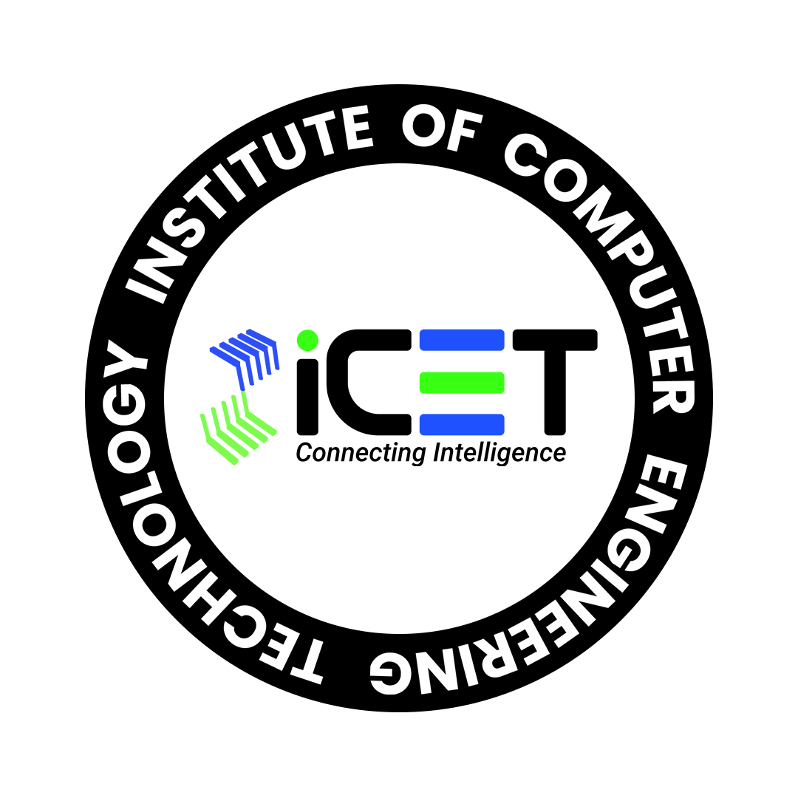

|  | HOME | ABOUT | COURSES | REASEARCH AND INNOVETION | CONTACT US |
|
|
Bridge Your Intelligence to a Software Career: |
|
NO DEGREE REQUIRED |
|
|
At iCET, we firmly believe that the path to becoming a successful software engineer doesn't necessarily require a traditional degree.
|
iCD - iCET Certified DeveloperiCD - iCET Certified Developer is a comprehensive program that is designed to prepare individuals for a professional career in the IT Software Industry. The course is targeted towards IT graduates, non-IT graduates or professionals and anyone who is currently employed and looking to start or improve their career in the IT Software Industry. iCD is available in two modes, online and physical learning. The online option allows students to complete the program virtually under the guidance of a panel of esteemed lecturers. The physical learning option offers students the opportunity to learn and interact with lecturers and peers in our sophisticated labs. Upon completion of the iCD certification, students will be equipped with analytical skills, design skills and the ability to implement practical self-projects resulting in them being 100% industry ready. If you’re looking to start or improve your career in the IT Software Industry, the iCD - iCET Certified Developer Program is the best choice for you |
iCM - iCET Certified MasteriCM (iCET Certified Master) program is designed to empower you with the practical skills and knowledge required to excel in the software industry. You will gain hands-on experience with a wide range of technologies and frameworks allowing you to gain the skill set required to develop your own desktop/mobile apps, responsive websites or even enterprise scale applications. |
453
453